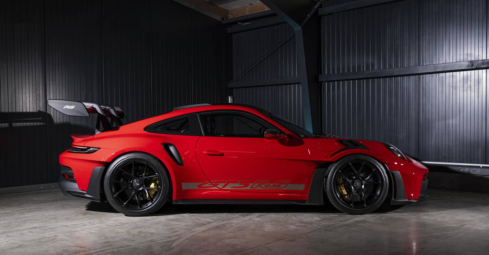

A história da Porsche
A Porsche é uma fabricante alemã de automóveis esportivos e de luxo. A empresa foi fundada em 1931 por Ferdinand Porsche.
A marca ficou mundialmente conhecida por seus carros esportivos e por sua participação em diversas competições automobilísticas.
O Porsche 911
O Porsche 911 é um dos modelos mais conhecidos da empresa. Ele possui uma longa história e passou por diversas gerações ao longo dos anos.

Tecnologia
A Porsche também investe em novas tecnologias, incluindo veículos elétricos, como o Porsche Taycan.